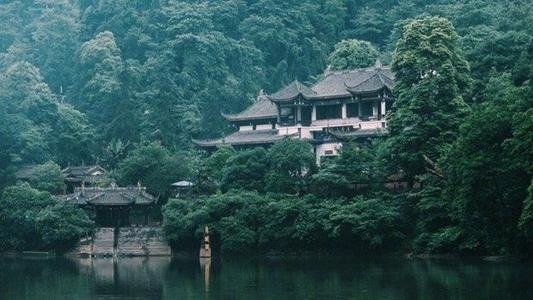

青城山靠岷山雪岭，面向川西平原，群峰环绕，状若城廓；林深树密，四季常绿；丹梯千级，曲径通幽。全山以幽洁取胜，与剑门之险，峨眉之秀，夔门之雄齐名。 景区大门前坐索道上观音阁，再上山是上清宫，老君阁，观音阁下走是景区外有圆明宫（圆明宫道家辟谷养生研修院，白云观，玉清宫景区，但圆明宫、白云观、玉 清宫都不是在景区内。
青城山位于四川省成都平原西北部，东距成都68公里，距都江堰仅10多公里。主峰老霄顶海拔1600米。青城山因其四季常青，满目青翠，诸峰环峙，状若城廓而得 名，素有"青城天下幽"之美誉，与剑门之险、峨嵋之秀、夔门之雄齐名。青城山分青城前山和青城后山。前山景色优美，文物古迹众多；后山自然景物神秘绮丽、原 始华美如世外桃源。 青城山靠岷山雪岭，面向川西平原，群峰环绕，状若城廓；林深树密，四季常绿；丹梯千级，曲径通幽。公元143年，“天师”张陵来到青城山，选中青城山的深幽涵碧 ，结茅传道，为道教“第五洞天”，完好保存有数十座道教宫观，珍藏大量文物和名家手迹。 可以说，青城山是一座纵横千百年的活的道教“博物馆”。青城山后山景区更有神秘的洞、大蜀王遗迹、遍布山中的飞瀑渊潭、曲桥栈道、颇具原始野趣。青城山的人 文景观、自然风光交相辉映，故有“青城天下幽”之美誉。 青城山是中国道教的重要发祥地，属于道教名山。全山的道教宫观以天师洞为核心，包括建福宫、上清宫、祖师殿、圆明宫、老君阁、玉清宫、朝阳洞等10余座。
建福宫建于唐开元十八年（公元730年），现存建筑为清代光绪年间（公元1888年）重建。现有大殿三重，分别奉祀道教名人和诸神，殿内柱上的394字的对联，被 赞为“青城一绝”。天然图画坊位于龙居山牌坊岗的山脊上，是一座十角重檐式的亭阁，建于清光绪（公元1875～1909年）年间。这里风景优美，游人到此仿佛置身 画中，故将其称为“天然图画”。 这些建筑充分体现了道家追求自然的思想，一般采用按中轴线对称展开的传统手法，并依据地形地貌，巧妙地构建各种建筑。建筑装饰上也反映了道教追求吉祥、长 寿和升仙的思想。对于深入研究中国古代的道教哲学思想，有着重要的历史和艺术价值。 青城山因其的秀丽的自然风光和众多道教建筑而成为天下名山，自古就是游览胜地和隐居修练之处，文人墨客们留下了的珍贵“墨宝”，为这座名山增添了丰富的人文 景观。特别是为数众多的楹联，不但赞美了青城山的美丽，还颂扬了道教思想、道教经典，表达出对中华民族的人文初祖由衷的敬意，以及对国家兴衰、民生荣辱的关注。
青城山风景区主要植被类型有亚热带常绿阔叶林、常绿落叶阔叶混交林和暖性针叶林。根据青城山样地调查资料、野外路线踏勘记录的植物种类及《中国都江堰市植 物名录》中所记载的青城山植物，初步估计植物346种，其中蕨类植物51种，隶属于26属l6科，种子植物295种，隶属于192属90科。其中裸子植物7种6计青城山 约有维管属5科；双子叶植物252种169属77科；单子叶植物36种22属8科。植物区系有明显从亚热带向温带过渡的。